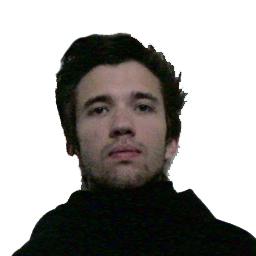

Sobre o Clube

O Clube de Robótica da Universidade de Coimbra foi fundado, por um grupo de alunos do Departamento de Engenharia de Electrotécnica e de Computadores, com o propósito de com projectos internos e externos dinamizar a Robótica pelos estudantes de engenharia da Universidade de Coimbra. Assim como servir de catalizador e facilitar o desenvolvimento de projectos e o acesso as competições de Robótica.
Estamos abertos todas as quarta-feiras desde as 10h às 17h.
Vem desenvolver os teus robôs e projectos no Clube.
Desenvolvimento de projectos
Queres desenvolver um projecto? No entanto precisas de ajuda? O Clube de Robótica pode ajudar-te. Para isso basta propores o teu projecto, que tanto desejas criar, e ao despertar o interesse da nossa comunidade poderás criar uma equipa que te ajude nele.
Apenas exigimos que tenhas vontade de aprender e trabalhar.
Competições de Robótica
Gostavas de participar numa competição mundial? Interessado? Na secçãocompetiçõespodes ver algumas nas quais poderás competir. O Clube de Robótica da Universidade de Coimbra apoiará a tua equipa com material e orientação.
Em baixo poderás ver alguns prémios já ganhos por membros do Clube.
Prémios
A equipa
Direcção
 |
 | |||
Antonio Simões |
Cristiano Alves |
Frederico Vaz |
Luís Afonso |
Tiago Custódio |
|
||
António |
Cristiano |
Frederico |
Luís |
Tiago |
Membros
Actualmente contamos com 27 membros associados. Junta-te a nós.
Alguma dúvida?
Estamos abertos a qualquer tipo de proposta de projecto e/ou projectos com outras entidades. Não hesite em entrar em contacto connosco.